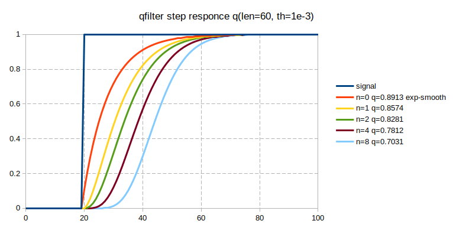

<style>
article {
  width: 40em;
  margin-left:auto;
  margin-right:auto;
}
article pre {
  padding: 1em 1.5em;
  border: 1px dashed #ccc
}
.output {
	border: 1px dashed #ccc;
	padding: 1em 2em;
	max-height: 4.5em;
	overflow: scroll;
	transition: max-height 1s ease-in-out 0.1s;
}
.output:before {
	content: "[Output]";
	display: block;
	font-weight: bold;
	border-bottom: 1px solid black;
}
.output:focus, .output:hover {
	max-height: 80em;
}
</style>
<article>

<h1>lua-aux</h1>
<hr/>
  
<ol>
  <li>Utils<ol>
    <li><a href="#dump">dump</a>
    <li><a href="#top">top</a>
    <li><a href="#orderpairs">orderpairs</a>
    <li><a href="#seq">seq</a>
  </ol>
  <li>math<ol>
    <li><a href="#complex">complex</a>
    <li><a href="#vector">vector</a>
    <li><a href="#matrix">matrix</a>
    <li><a href="#qfilter">qfilter</a>
    <li><a href="#prime">prime</a>
    <li><a href="#sun">sun</a>
  </ol>
  <li>file utils<ol>
    <li><a href="#utils">utils</a>
    <li><a href="#Packet">Packet</a>
    <li><a href="#BinaryReader">BinaryReader</a>
    <li><a href="#parser">parser</a>
    <li><a href="#utf8cp">utf8cp</a>
  </ol>
  <li>extensions<ol>
    <li><a href="#const">const</a>
    <li><a href="#strict">strict</a>
    <li><a href="#pure">pure</a>
    <li><a href="#scope">scope</a>
    <li><a href="#for_scope">for_scope</a>
    <li><a href="#reload">reload</a>
  </ol>
</ol>

<h2>Utils</h2>

<h3 id="dump"><a href="#">dump</a></h3>
<p>simple debugging function</p>
<pre>
require "dump"
dump(_G)
</pre>
<pre class="output">
arg	table: 0x56278fb459a0
utf8	table: 0x56278fb44850
string	table: 0x56278fb43b40
dump	function: 0x56278fb7b7d0
type	function: 0x56278e111b80
pcall	function: 0x56278e112aa0
table	table: 0x56278fb42210
collectgarbage	function: 0x56278e112420
pairs	function: 0x56278e1129c0
select	function: 0x56278e111c10
ipairs	function: 0x56278e1121c0
_G	table: 0x56278fb3fbc0
setmetatable	function: 0x56278e1125b0
next	function: 0x56278e112210
rawset	function: 0x56278e111f20
tostring	function: 0x56278e111be0
load	function: 0x56278e1126d0
rawget	function: 0x56278e111f80
tonumber	function: 0x56278e111cc0
debug	table: 0x56278fb454e0
assert	function: 0x56278e112940
os	table: 0x56278fb436e0
xpcall	function: 0x56278e1124f0
math	table: 0x56278fb43ef0
require	function: 0x56278fb41e40
io	table: 0x56278fb424e0
rawlen	function: 0x56278e111fd0
rawequal	function: 0x56278e112020
getmetatable	function: 0x56278e112870
dofile	function: 0x56278e1128c0
print	function: 0x56278e112070
error	function: 0x56278e112390
loadfile	function: 0x56278e1127f0
coroutine	table: 0x56278fb41eb0
_VERSION	Lua 5.3
package	table: 0x56278fb41830
</pre>
<pre>
dump(os)
</pre>
<pre class="output">
execute	function: 0x56278e116740
difftime	function: 0x56278e1167a0
getenv	function: 0x56278e116680
remove	function: 0x56278e116640
tmpname	function: 0x56278e116820
time	function: 0x56278e116b20
setlocale	function: 0x56278e116580
clock	function: 0x56278e1167f0
rename	function: 0x56278e1165f0
exit	function: 0x56278e1166b0
date	function: 0x56278e116cd0
</pre>
 
<h3 id="top">top</h3>
<p>for selecting top items</p>

<h3 id="orderpairs">orderpairs</h3>
<p>ordered pairs()</p>
<h3>seq</h3>
<p>sequence definition</p>
  
<hr/>

<h2>Extending lua</h2>
<h3 id="const">const</h3>
<p>read only restriction for tables</p>
<h3 id="strict">strict</h3>
<p>access only for defined fields</p>
<h3 id="pure">pure</h3>
<p>isolate part of code</p>
<h3 id="scope">scope</h3>
<p>resource managment</p>
<h3 id="for_scope">for_scope</h3>
<p>resource managment using for construction</p>
<h3 id="reload">reload</h3>
<p>force reload package</p>
  
<hr/>

<h2>Text/Binary file utils</h2>
<h3 id="utf8cp">utf8cp</h3>
<p>minimal code pages support</p>
<h3 id="utils">utils</h3>
<p>simple text generator utils</p>
<h3 id="BinaryReader">BinaryReader</h3>
<p>structured binary file reader with cache</p>
<h3 id="Packet">Packet</h3>
<p>packet parser/builder</p>
<h3 id="parser">parser</h3>
<p>text parser</p>

<hr/>

<h2>Math</h2>
<h3 id="complex">complex</h3>
<p>complex numbers support</p>
<h3 id="vector">vector</h3>
<p>vector math. can be used with complex numbers</p>
<h3 id="matrix">matrix</h3>
<p>matrix math. can be used with complex numbers</p>
<h3 id="qfilter">qfilter</h3>
<p>bell-shaped signal filter</p>

<h3 id="prime">prime</h3>
<p>basic integer math support</p>
<h3 id="sun">sun</h3>
<p>calculate sun rase and down times for location specified</p>

</article>
